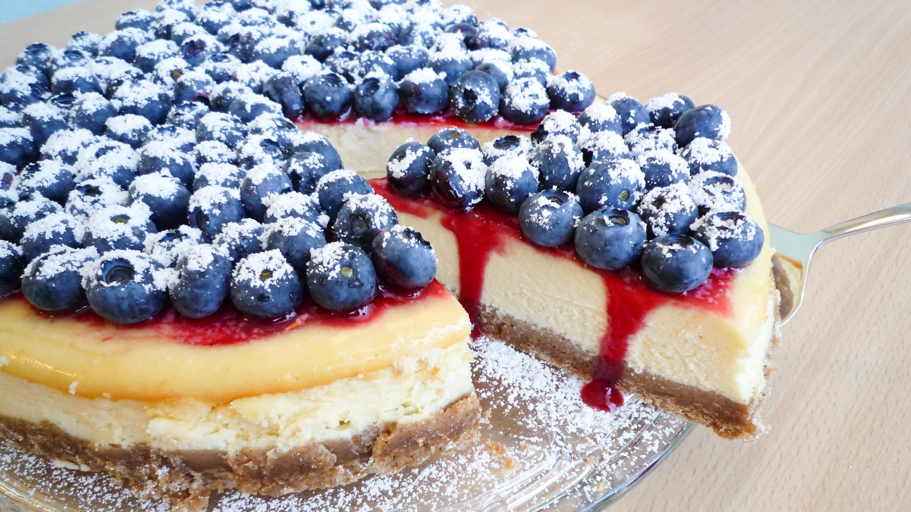

New York Cheesecake

Pizza
Pizza
Interesting Facts
Zutaten für den Teig:
150 g Spekulatiuskekse
250 g Erdnussbutter
Zutaten für die Creme:
350 g Frischkäse
150 g Creme Fraiche
Saft einer halben Zitrone
100 g Zucker